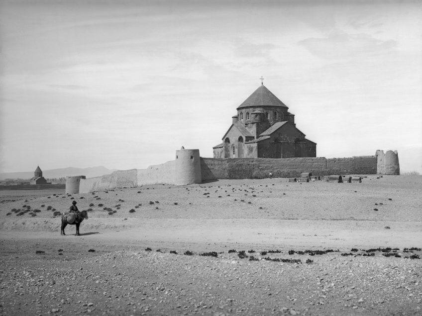
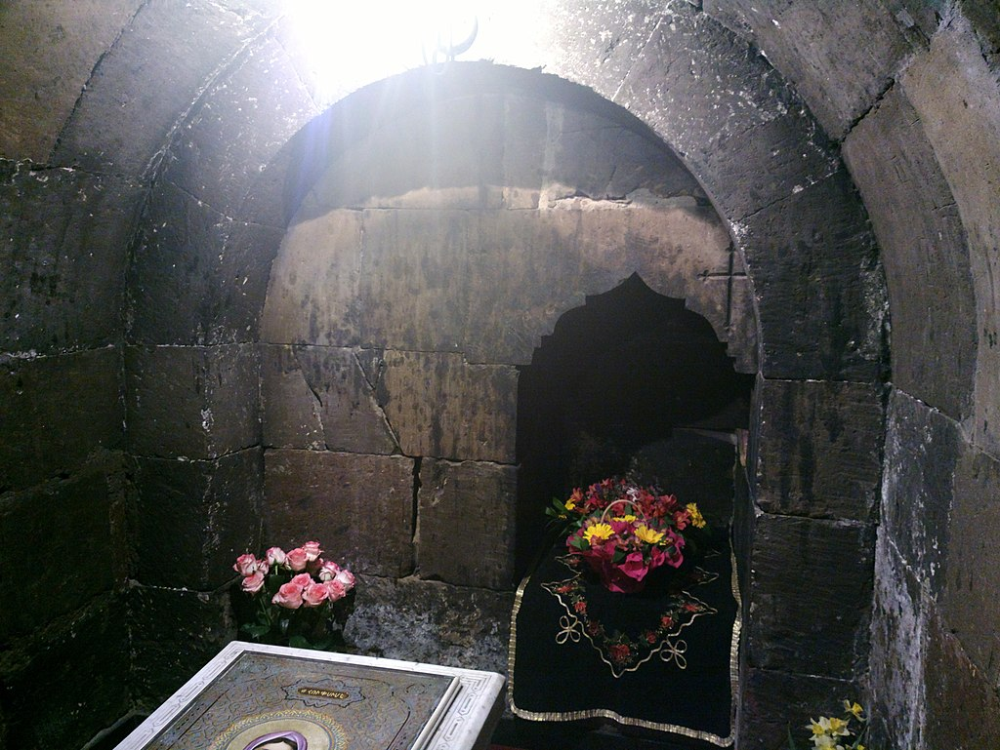
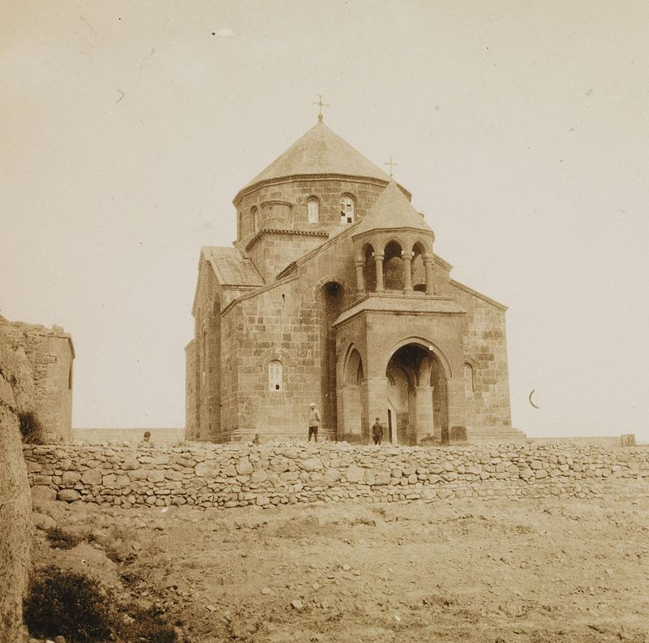
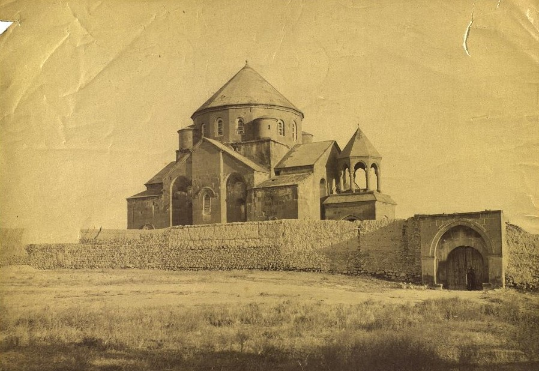
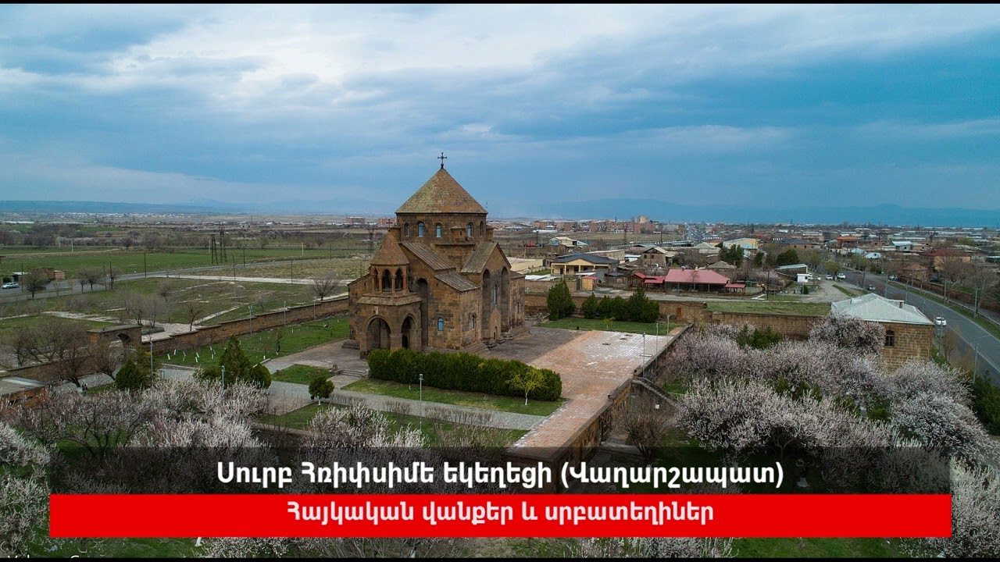

Սուրբ Հռիփսիմե եկեղեցի



Վանական համալիրը 1878 թվականին, լուս․ հեղինակ՝ Հովհաննես Քյուրքչյան
Տաճարը 1925 թվականին: Ֆրիտյոֆ Նանսենի ալբոմից

Ավանդության համաձայն, Հռիփսիմեն քրիստոնյա կույսերի հետ, խուսափելով
Դիոկղետիանոս կայսեր (284-305)
հալածանքներից, փախչում են Հայաստան և քրիստոնեություն քարոզում, որտեղ հայոց Տրդատ Գ Մեծ արքայի կողմից
նույնպես հալածանքների են ենթարկվում և սպանվում իր հավատակից 32 կույսերի հետ միասին։ Հռիփսիմյան
կույսերի նահատակման տեղում Տրդատ արքան և Գրիգոր Լուսավորիչը կառուցել են վկայարան՝ կիսագետնափոր
հանգստարան, վրան՝ քարաշեն չորս սյուներով ամպհովանի։

Էջմիածնի Սուրբ Հռիփսիմե եկեղեցի, հայկական նշանավոր եկեղեցի Հայաստանի Վաղարշապատ
քաղաքում։ Ներառված
է ՅՈՒՆԵՍԿՕ-ի համաշխարհային ժառանգության ցուցակի մեջ։Ավանդության համաձայն, Հռիփսիմեն քրիստոնյա
կույսերի հետ, խուսափելով Դիոկղետիանոս կայսեր (284-305) հալածանքներից, փախչում են Հայաստան և
քրիստոնեություն քարոզում, որտեղ հայոց Տրդատ Գ Մեծ արքայի կողմից նույնպես հալածանքների են ենթարկվում
և սպանվում իր հավատակից 32 կույսերի հետ միասին։ Հռիփսիմյան կույսերի նահատակման տեղում Տրդատ արքան և
Գրիգոր Լուսավորիչը կառուցել են վկայարան՝ կիսագետնափոր հանգստարան, վրան՝ քարաշեն չորս սյուներով
ամպհովանի։ V դ. այն ավերել են պարսիկները, Սահակ Պարթևը կառուցել է նորը։ Եկեղեցին հիմնադրվել է այդ
վայրում 618 թ-ին Կոմիտաս Ա Աղցեցի կաթողիկոսի կողմից։ Ավագ խորանի արձանագրությունում կաթողիկոսն իրեն
անվանել է «Շինող սրբոյ Հռիփսիմեի»։Հռիփսիմեի տաճարը պատկանում է միջնադարյան Հայաստանի եկեղեցական
կառույցների առավել կատարելագործված տիպին (ձևավորվել է VI դարում)։ Ներքուստ խաչաձև է, որն ստեղծվել է
գմբեթածածկ ծավալին կցված չորս խորաններով ու շրջանի 3/4 հատվածքի անկյունային խորշերով։ Ներքին
տարածությունն ամբողջական է, ընդարձակ, ամփոփ ու սլացիկ։ Արտաքինից պարփակված է ուղղանկյուն ծավալի մեջ,
անկյուններում ստացվել են չորս սենյակներ, որոնք աղոթասրահի հետ կապվում են անկյունային խորշերով։
Հռիփսիմեի տաճարը կառուցվածքով քարի ողջ պարագծով տարած միաձույլ համակարգ է, ունի մեծ
երկրաշարժակայունություն։ Խորանների գմբեթարդների և նրանց տանիքների միջև թողնված են սնամեջ
տարածություններ, որոնք նպաստել են եկեղեցու գերազանց հնչականությանը և ծառայել որպես գաղտնարաններ։
Հռիփսիմեի տաճարի կառուցվածքային համակարգը՝ չորս խորանների, խորշերի ու նրանց վրա հանգչող գմբեթի
կորագիծ մակերևույթներով, նրա գեղարվեստական կերպարի հիմնական միջոցն է։ Աղոթասրահը ստացել է խիստ
արտահայտիչ տարածական լուծում, ութ զանգվածեղ որմնամույթերի ուղղաձիգ ընդգծումները նրան տալիս են
վերսլացություն։ Հռիփսիմեի տաճարն իր տիպի կառույցներից առանձնանում է լայնանիստ (10, 1 մ) ոչ բարձր
թմբուկով, գմբեթային քառանկյան անկյուններում թմբուկին կցված աշտարակիկներով, ցածր ուղղանիստ ծավալից
մինչև գմբեթի վեղարը ծավալների ներդաշնակ անցումներով, որով ձևավորվել է հուշարձանի առավել արտահայտիչ
ուրվագիծը։ Ճակատների սեղանաձև կտրվածքով խորշերն ստեղծել են ուղղաձիգ ուժեղ ընդգծումներ, ճակատների
հարթությունը դարձրել ծավալային, թեթևացրել հուշարձանի զանգվածեղությունը։ Հռիփսիմեի տաճարին բնորոշ է
ծավալների ամփոփ ու ներդաշնակ համակցությունը։